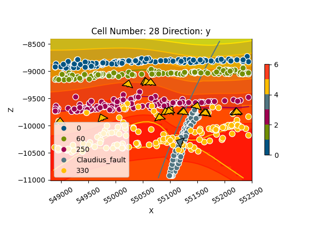

Note
Click here to download the full example code
Claudius¶
import sys, os
os.environ["THEANO_FLAGS"] = "mode=FAST_RUN,device=cpu"
# Importing gempy
import gempy as gp
# Aux imports
import numpy as np
import pandas as pn
Loading data from repository:¶
With pandas we can do it directly from the web and with the right args we can directly tidy the data in gempy style:
dfs = []
for letter in 'ABCD':
dfs.append(pn.read_csv('https://raw.githubusercontent.com/Loop3D/ImplicitBenchmark/master/Claudius/' +
letter + 'Points.csv', sep=';',
names=['X', 'Y', 'Z', 'surface', 'cutoff'], header=0)[::5])
# Add fault:
dfs.append(pn.read_csv('https://raw.githubusercontent.com/Loop3D/ImplicitBenchmark/master/Claudius/Fault.csv',
names=['X', 'Y', 'Z', 'surface'], header=0, sep=';'))
surface_points = pn.concat(dfs, sort=True)
surface_points['surface'] =surface_points['surface'].astype('str')
# surface_points['surface'] = surface_points['surface'].astype('str')
surface_points.reset_index(inplace=True, drop=False)
surface_points.tail()
Out:
index int64
X float64
Y float64
Z float64
cutoff float64
surface object
dtype: object
How many points are per surface
surface_points.groupby('surface').count()
Now we do the same with the orientations:
dfs = []
for surf in ['0', '330']:
o = pn.read_csv('https://raw.githubusercontent.com/Loop3D/ImplicitBenchmark/master/Claudius/Dips.csv', sep=';',
names=['X', 'Y', 'Z', 'G_x', 'G_y', 'G_z', '-'], header=1)
# Orientation needs to belong to a surface. This is mainly to categorize to which series belong and to
# use the same color
o['surface'] = surf
dfs.append(o)
orientations = pn.concat(dfs, sort=True)
orientations.reset_index(inplace=True, drop=False)
orientations.tail()
Out:
index int64
- float64
G_x float64
G_y float64
G_z float64
X float64
Y float64
Z float64
surface object
dtype: object
Data initialization:¶
Suggested size of the axis-aligned modeling box: Origin: 548800 7816600 -8400 Maximum: 552500 7822000 -11010
Suggested resolution: 100m x 100m x -90m (grid size 38 x 55 x 30)
Number of voxels:
np.array([38, 55, 30]).prod()
Out:
62700
geo_model = gp.create_model('Claudius')
# Importing the data from csv files and settign extent and resolution
geo_model = gp.init_data(geo_model,
extent=[548800, 552500, 7816600, 7822000, -11010, -8400], resolution=[38, 55, 30],
surface_points_df=surface_points[::5], orientations_df=orientations, surface_name='surface',
add_basement=True)
Out:
Active grids: ['regular']
We are going to increase the smoothness (nugget) of the data to increase the conditional number of the matrix:
geo_model.modify_surface_points(geo_model.surface_points.df.index, smooth=0.1).df.tail()
Also the original poles are pointing downwards. We can change the direction by calling the following:
geo_model.modify_orientations(geo_model.orientations.df.index, polarity=-1).df.tail()
We need an orientation per series/fault. The faults does not have orientation so the easiest is to create an orientation from the surface points availablle:
fault_idx = geo_model.surface_points.df.index[geo_model.surface_points.df['surface'] == 'Claudius_fault']
gp.set_orientation_from_surface_points(geo_model, fault_idx).df.tail()
Now we can see how the data looks so far:
gp.plot_2d(geo_model, direction='y')
Out:
<gempy.plot.visualization_2d.Plot2D object at 0x7fcc46042a60>
By default all surfaces belong to one unique series.
We will need to separate with surface belong to each series:
stratigraphy = 'fixed'
if stratigraphy == 'original':
gp.map_stack_to_surfaces(geo_model, {'Fault': 'Claudius_fault',
'Default series': ('0', '60', '250', '330'),
})
# Ordering the events from younger to older:
geo_model.reorder_series(['Fault', 'Default series', 'Basement'])
elif stratigraphy == 'fixed':
gp.map_stack_to_surfaces(geo_model, {'Default series': ('0', '60', '250'),
'Fault': 'Claudius_fault',
'Uncomformity': '330',
})
# Ordering the events from younger to older:
geo_model.reorder_series(['Default series', 'Fault', 'Uncomformity', 'Basement'])
So far we did not specify which series/faults are actula faults:
geo_model.set_is_fault('Fault')
Out:
Fault colors changed. If you do not like this behavior, set change_color to False.
Ordering the events from younger to older:
geo_model.reorder_series([‘Default series’, ‘Fault’, ‘Uncomformity’, ‘Basement’])
Check which series/faults are affected by other faults (rows offset columns):
Now we are good to go:
gp.set_interpolator(geo_model, theano_optimizer='fast_run',
compile_theano=True)
Out:
Setting kriging parameters to their default values.
Compiling theano function...
Level of Optimization: fast_run
Device: cpu
Precision: float64
Number of faults: 1
Compilation Done!
Kriging values:
values
range 7047.13
$C_o$ 1182430.95
drift equations [3, 3, 3, 3]
<gempy.core.interpolator.InterpolatorModel object at 0x7fcc6b70cd60>
Out:
Lithology ids
[5. 5. 5. ... 1. 1. 1.]
sect = [35]
gp.plot_2d(geo_model, cell_number=sect, series_n=1, show_scalar=True, direction='x')
Out:
<gempy.plot.visualization_2d.Plot2D object at 0x7fcc46bbdac0>
gp.plot_2d(geo_model, cell_number=sect, show_data=True, direction='x')
Out:
<gempy.plot.visualization_2d.Plot2D object at 0x7fcc74890a60>
gp.plot_2d(geo_model, cell_number=[28], series_n=0, direction='y', show_scalar=True)
gp.plot_2d(geo_model, cell_number=[28], series_n=1, direction='y', show_scalar=True)
gp.plot_2d(geo_model, cell_number=[28], series_n=2, direction='y', show_scalar=True)
- 
Out:
<gempy.plot.visualization_2d.Plot2D object at 0x7fcc6b8d83a0>
gp.plot_2d(geo_model, cell_number=[28], show_data=True, direction='y')
Out:
<gempy.plot.visualization_2d.Plot2D object at 0x7fccd0e70df0>
# sphinx_gallery_thumbnail_number = 8
gp.plot_3d(geo_model)
Out:
<gempy.plot.vista.GemPyToVista object at 0x7fcb8ae53910>
Export data:¶
The solution is stored in a numpy array of the following shape. Axis 0 are the scalar fields of each correspondent series/faults in the following order (except basement):
For the surfaces, there are two numpy arrays, one with vertices and the other with triangles. Axis 0 is each surface in the order:
np.save(‘Claudius_scalar’, geo_model.solutions.scalar_field_matrix) np.save(‘Claudius_ver’, geo_model.solutions.vertices) np.save(‘Claudius_edges’, geo_model.solutions.edges) gp.plot.export_to_vtk(geo_model, ‘Claudius’)
Timing:¶
Fault¶
CPU Memory 8 Gb 44.9 s ± 150 ms per loop (mean ± std. dev. of 7 runs, 1 loop each)
GPU Memory 6.8 gb:
2.13 s ± 3.39 ms per loop (mean ± std. dev. of 7 runs, 1 loop each) + steps str = [64.56394268] + steps str = [9927.69441126] + steps str = [196.15202667]
1.13 s ± 2.08 ms per loop (mean ± std. dev. of 7 runs, 1 loop each)
+ steps __str__ = [645.63943742] + steps __str__ = [99276.94573919] + steps __str__ = [1961.52029888]
Export to gocad¶
def write_property_to_gocad_voxet(propertyfilename, propertyvalues):
"""
This function writes a numpy array into the right format for a gocad
voxet property file. This assumet there is a property already added to the .vo file,
and is just updating the file.
propertyfile - string giving the path to the file to write
propertyvalues - numpy array nz,ny,nx ordering and in float format
"""
propertyvalues = propertyvalues.astype('>f4') # big endian
# array = propertyvalues.newbyteorder()
propertyvalues.tofile(propertyfilename)
write_property_to_gocad_voxet('claudius_sf_gempy',
geo_model.solutions.scalar_field_matrix[1].reshape([38, 55, 30]).ravel('F'))
gp.save_model(geo_model)
Out:
True
Total running time of the script: ( 0 minutes 26.141 seconds)